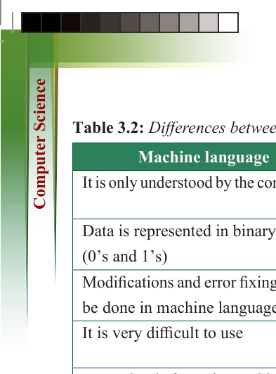
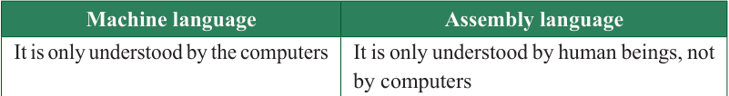

110
for Secondary Schools
Table 3.2: Differences between machine language and assembly language



Machine language

Assembly language

It is only understood by the computers

It is only understood by human beings, not

by computers

Data is represented in binary format

(0’s and 1’s)

Data is represented in binary or

hexadecimal

Modifications and error fixing cannot
be done in machine language
Modifications and error fixing can be done
in assembly language
It is very difficult to use
It is easy to use because some alphabets and mnemonics are used
Execution is faster in machine language because data is already present in binary format
Execution is slower compared to machine language
Advantages of low-level programming languages
(a) Programs designed using low-level memory require less memory to be executed, which means they run faster.
(b) Low-level languages do not need compilers or interpreters to change into machine-readable form.
(c) Since a low-level language is closely related to a machine language, it provides direct interaction with the computer’s internal memory.
(d) Low-level programming languages provide a conducive environment for utilising the processor.
(e) There is direct communication between hardware parts and low-level
programming languages.
Disadvantages of low-level programming languages
(a) Low-level languages require high expertise in programming to design a program.
(b) Programs created with low-level languages are not portable simply because they cannot be transferred from one piece of hardware or software to another.

ComputerScin